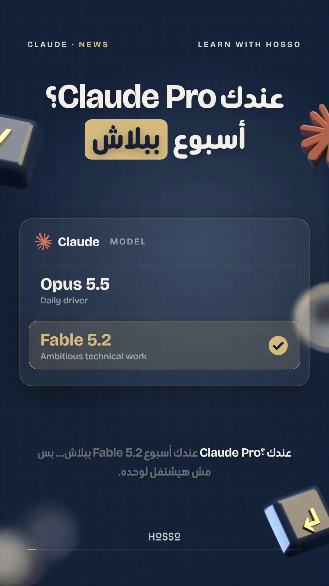
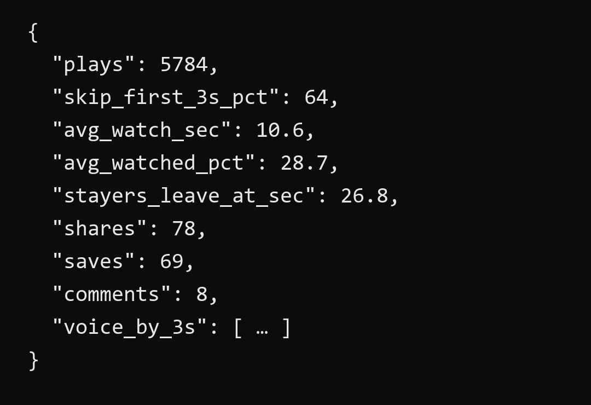
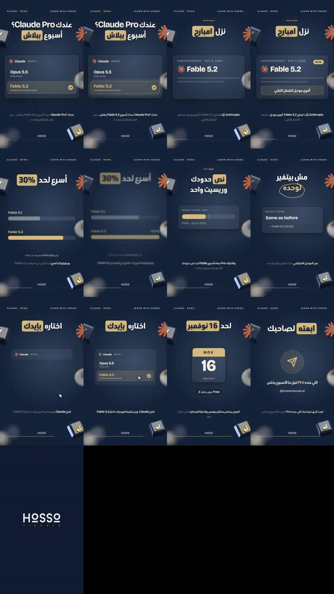
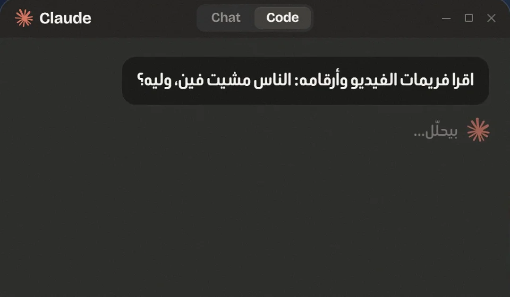
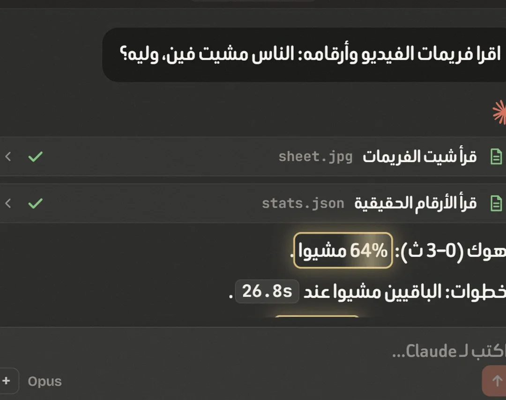

Claudeحلّل ريلي مشهد مشهـــد
خطوات الحلقة 14 من «بتعلّم Claude قدامكم»: شيت فريمات للريل بأمر واحد، وأرقامه الحقيقية، وClaude يقولك الناس مشيت فين ومشيت ليه.


- 01
خد ملف الريل نفسه
هات الملف الأصلي للريل (mp4) من على جهازك، وحطه في فولدر لوحده باسم reel.mp4. حلّل ريلاتك إنت: ده ريلي اللي جاب قرب 6 آلاف مشاهدة.

أول فريم من الريل اللي حلّلناه - 02
هات أرقامه الحقيقية
من Insights بتاعة الريل على Instagram خد: المشاهدات، نسبة اللي عدّوا في أول ثواني، متوسط وقت المشاهدة، والشير والسيف. اكتبهم في ملف stats.json جنب الريل، ولو عندك الكلام مقسوم كل 3 ثواني ضيفه كمان.
{ "plays": 0, "skip_first_3s_pct": 0, "avg_watch_sec": 0, "shares": 0, "saves": 0 }
ملف الأرقام اللي Claude قراه - 03
اعمل شيت فريمات
الأمر ده بياخد فريم كل 3 ثواني ويرصّهم في صورة واحدة 4×4، عشان Claude يشوف الريل كله مرة واحدة. محتاج ffmpeg على جهازك.
ffmpeg -v error -i reel.mp4 -vf "fps=1/3,scale=240:-1,tile=4x4" -frames 1 sheet.jpg
الشيت: فريم كل 3 ثواني من الريل - 04
خلّي Claude يحلّله
افتح الترمينال في نفس الفولدر وشغّل Claude Code بالأمر ده. هو بيقرا الصورة والأرقام بس (Read)، ومش بيعدّل ولا بيمسح حاجة.
claude -p "Read sheet.jpg (one frame every 3 s) and stats.json (real numbers). Scene by scene: where people left and why, with the numbers. 6 short lines; last line FIX: the one change for the next reel." --allowedTools Read
الأمر في Claude: يقرا الشيت والأرقام بس - 05
اقرا النتيجة سطر سطر
كل سطر مشهد: من ثانية كام لكام، حصل فيه إيه، والناس فضلت ولا مشيت، بالأرقام الحقيقية. عندي الهوك خسر 64% في أول 3 ثواني، والناس اللي فضلت مشيت عند 26.8 ثانية وقت الخطوات.

رد Claude: الهوك خسر 64% في أول 3 ثواني - 06
طبّق حاجة واحدة في الريل الجاي
السطر الأخير FIX هو التعديل الواحد اللي تجرّبه. عندي كان: الميعاد (16 نوفمبر) يتقال في أول 3 ثواني. جرّب تعديل واحد بس كل مرة، عشان تعرف هو اللي فرق ولا لأ.
نصايح صغيرة
- الشيت بيوري Claude الريل كله في صورة واحدة، فبيقارن المشاهد ببعض بدل ما يشوف فريم لوحده.
- الأرقام لازم تكون الحقيقية من Insights. Claude بيحلّل اللي قدامه بس، ومش هيعرف الريل اتعمله كام شير من الصورة.
- لو الريل أطول من 48 ثانية، خلّي الفريم كل 4 ثواني (fps=1/4) أو كبّر الشبكة (tile=4x5).
عايز حد يعملهولك؟
مش فاضي تتعلم وتعمل بنفسك؟ أنا بعمل ريلز لبراندك بنفس الطريقة اللي بشرحها هنا.